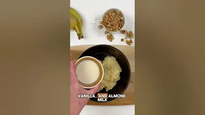

The most moist, sweet, fluffy banana bread ever (and it has no butter!)

Ingredients
- flour
- baking powder
- baking soda
- cinnamon
- salt
- banana
- vanilla
- milk
- bread
- butter
Steps
- Did you know if you mix flour, baking powder, baking soda, coconut sugar, cinnamon, nutmeg, and salt?
- Then mix mashed banana, oil, vanilla and almond milk.
- Fold it all together with chopped walnuts.
- Bake for 50 minutes until golden and fluffy.
From the video's narration and on-screen text, by @thepickyeater on YouTube. Open original